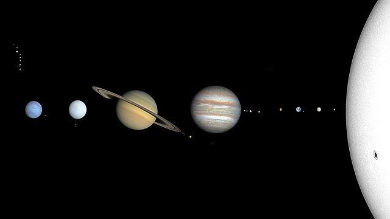
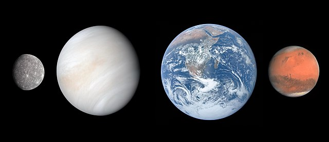
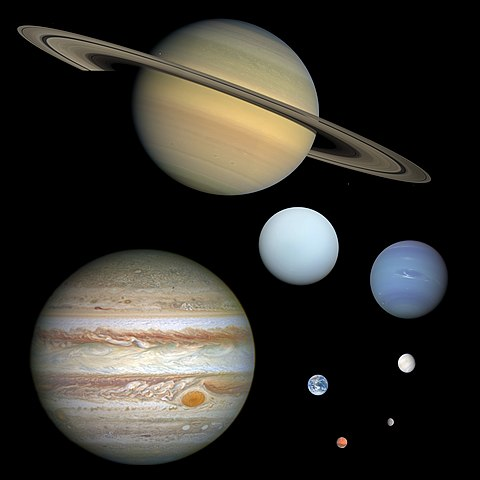

The Solar System is the gravitationally bound system of the Sun and the objects that orbit it. It formed 4.6 billion years ago from the gravitational collapse of a giant interstellar molecular cloud
The inner Solar System is the region comprising the terrestrial planets and the asteroid belt
The four outer planets, also called giant planets or Jovian planets, collectively make up 99% of the mass known to orbit the Sun
The planets orbit the Sun, roughly in the same plane. The Solar System moves through the galaxy with about a 60° angle between the galactic plane and the planetary orbital plane. The Sun appears to move up-and-down and in-and-out with respect to the rest of the galaxy as it revolves around the Milky Way
Our Solar System Move Around the Milky Way